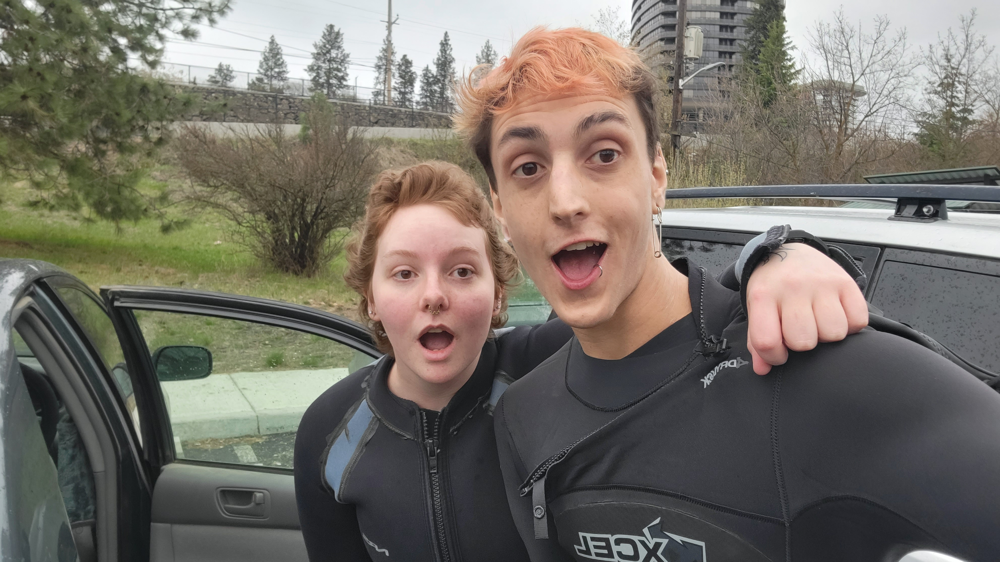

Scott, you are the emotional core of this campus. You gave me freedom—actual freedom—to speak, to ask questions, and to be complicated without fear of punishment or misunderstanding. No one else on this campus ever made me feel as safe to just think out loud. And you noticed things, like the zine I made when no one else did. That small act meant more than you could know. You have been kind, real, honest, and supportive—even when the conversation was tough. You helped me fight, even when I was bruised and crying on the floor, and reminded me again and again that I can do this. And guess what? I DID IT!!! I passed—not Computer Science 2—but I passed something bigger: I now understand the core concepts of coding, I'm pursuing UX seriously, and I feel about 80% of the way to where I need to be. You are a huge part of that. Thank you. Genuinely. And if you're open to it, I'd love to take you and Pete out for a celebratory drink (just one!).
